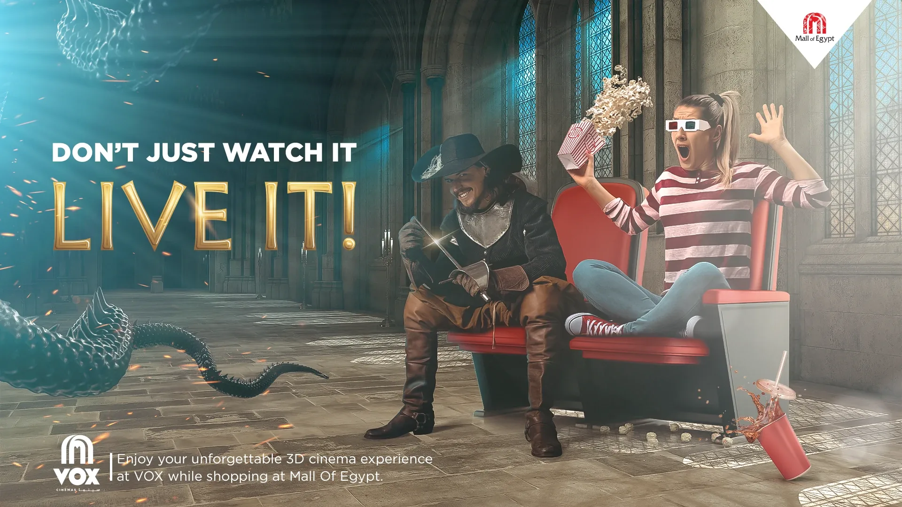
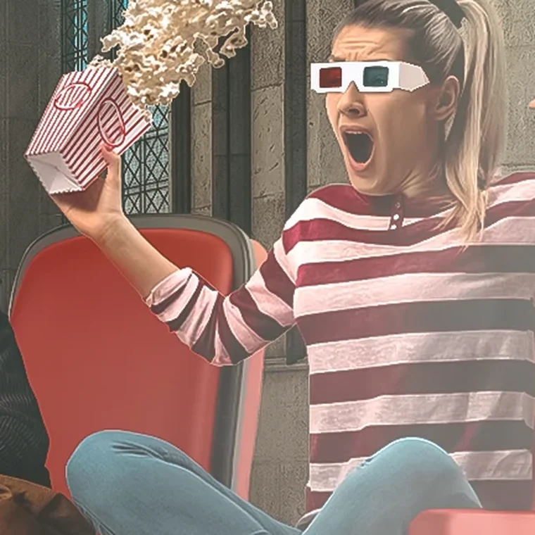
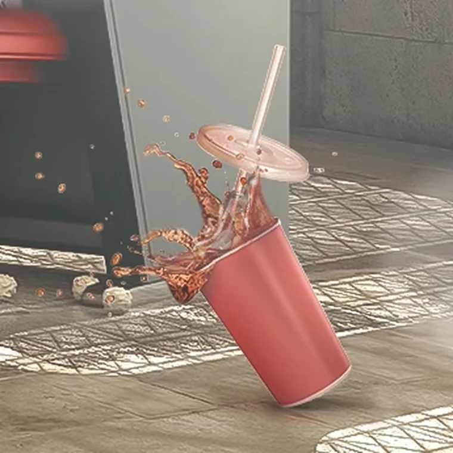

You don't just watch it — you live it.

VOX isn't selling a ticket — it's selling immersion. The key visual had to make you feel the film spill into your seat: the actor beside you, the creature's tail brushing past.
Instead of showing a screen, we drop the viewer into the story — caught between the character and a dragon's tail, half-thrilled, half-terrified.
Cinematic lighting, real-world staging and a believable creature make the moment land — so 'you don't just watch it, you live it' is felt, not claimed.

